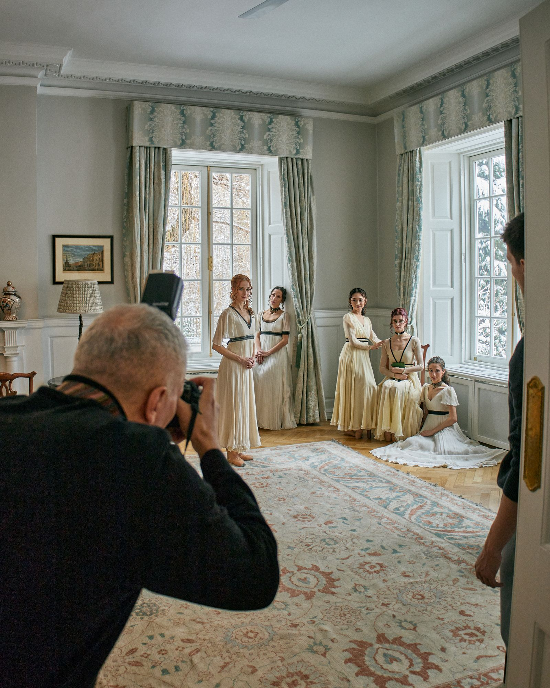
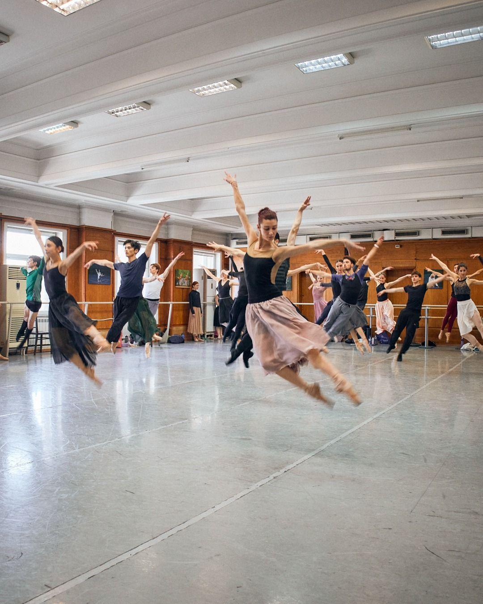

Sofia Opera and Ballet × British Embassy Sofia — Pride and Prejudice, World Premiere.

An opportunity came in through the British Council: the Sofia Opera and Ballet was staging the world premiere of a ballet adaptation of Pride and Prejudice, choreographed by Leo Mujić. There was scope for a collaboration with the Embassy. What started as a routine cultural diplomacy brief became something more ambitious once I took ownership of it — proposing a collaborative marketing approach that would treat the premiere as a shared cultural moment, not a sponsorship logo on a poster.
The first meeting set the tone: a working conversation with Marta Petkova, Leo Mujić, and Lyudmila Ilieva about what a real collaboration could look like.
From there, I produced and led the Embassy's involvement end-to-end. I proposed the idea of shooting the official poster image in the residence, and the access to the Opera's last raw rehearsal in the studio — a moment the institution had never previously opened up to a foreign mission.
I assisted the production photography at the residence, working alongside the Opera's photographer, Leo Mujić, and Balint Rauscher.
The strategy was simple: treat the Opera as a partner with its own creative authority, not a stage to be borrowed.


The Sofia Opera and Ballet expressed that this marked the first time a foreign mission of this seniority had engaged so closely with the institution's working process — a recognition that has opened the door to ongoing collaboration with their leadership.
Pride and Prejudice was the project that crystallised what YGREQ.STUDIO does. It wasn't about producing a single beautiful image — it was about reading what an institution needed, proposing a way of working that respected its authority while bringing something new, and managing the production from idea to delivery. The Embassy got a campaign with real cultural weight. The Opera got attention from an audience it doesn't usually reach. Both got something neither could have produced alone. That's the work.